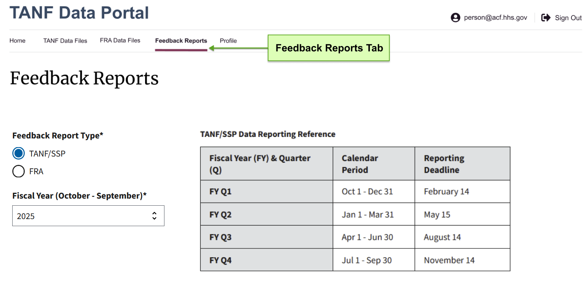
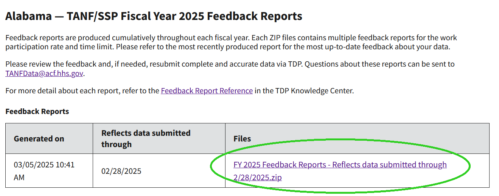
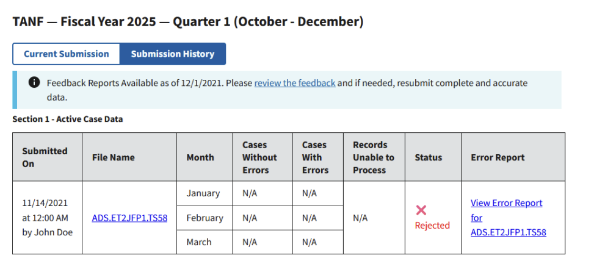

Viewing Feedback Reports
OFA produces feedback reports cumulatively throughout each fiscal year. These include Work Participation Rate (WPR), Time Limit reports, and others which have traditionally been shared via email.
In the interest of improved data security and accessibility, all reporting will now be delivered via TDP. This guide provides instructions on how to access, understand and address feedback reports. If you believe you should have access to Feedback Reports but do not, please reach out to tanfdata@acf.hhs.gov.
Jump to:
- Finding Feedback Reports
- TANF/SSP Feedback Reports
- FRA Feedback Reports
- Tribal TANF Feedback Reports
Finding Feedback Reports
-
Search for a report type and reporting period
On the Feedback Reports page, complete the search fields for 'Feedback Report Type' (available if your program submits FRA data to TDP) and 'Fiscal Year (October – September)' to identify which data you’ll be viewing. The Reporting Deadline Reference tables are provided to help you map the calendar period content within the file to the reporting fiscal period and its respective reporting deadline.

-
Download and view report files
To access the report files, Click on the zip file link in the 'Files' column to download the feedback files associated with the selected fiscal year. Each file is titled in accordance with your FIPS or tribe code.

{kind=link}
{kind=link}
TDP will send you a notification email when Feedback Reports are uploaded and link you to the reports from the submission history section of a reporting period you're viewing in the Data Files tab.
{kind=link}

TANF/SSP Feedback Reports
Each ZIP file contains multiple feedback reports for the preliminary work participation rate and time limit calculations. Please refer to the most recently produced report for the most up-to-date feedback about your data. For examples of each type of feedback report and explanations of error flags please refer to the downloadable workbook below.
If you have any questions or require assistance, please contact Yun.Song@acf.hhs.gov and copy TANFData@acf.hhs.gov.
Reports included in the workbook
TANF WPR Reports
- TANF Monthly Cases Summary
- Error Flags
- TANF Cases Review
- 3.0 Zero Payment
- 3.1 Excuse Absense hours >4 hours
- 3.2 Holiday hours >4 or 6 hours
- 3.3 Work hours >80 hours
- 3.4 Disregarded but met work requirement cases
- Numerator / Denominator and rate
SSP WPR Reports
- SSP Monthly Cases Summary
- Error Flags
- SSP Cases Review
- 3.0 Zero Payment
- 3.1 Excuse Absense hours >4 hours
- 3.2 Holiday hours >4 or 6 hours
- 3.3 Work hours >80 hours
- 3.4 Disregarded but met work requirement cases
- Numerator / Denominator and rate
- Number of cases each month with Cash Assistance < $35
TANF & SSP Combined
- TANF & SSP numerator / denominator and rate
- TANF & SSP combined WPRs
Time Limit Reports
- Countable Months
- Exemption Distribution
- TimeLimit Errorflags
- Number of cases with over 60 months
Extras
- Invalid social security numbers
- Invalid dates of birth or age inappropriations
TANF & SSP Combined WPR
- TANF & SSP numerator/denominator and rate (e.g., CMBXX_NUMDEN.pdf) shows monthly counts and fiscal year averages of families who met work requirements (numerator), along with total families included in the WPR (denominator). Please review monthly numerator counts and confirm that these match your expectations. For states reporting on the full (universe) caseload, any value with a decimal (e.g., 25.7) indicates a mismatch in families reported between Section 1 and Section 3 data—which indicates the original data submissions were not aligned, or that some cases were rejected during transmission.
- TANF & SSP combined Work Participation Rates (e.g., WTRFXX_RTE.pdf) Shows monthly and fiscal year average work participation rates (WPR) for TANF (and SSP, if applicable), including all-family and two-parent rates, as well as the combined rates across programs. Please review the combined all-family and two-parent rates first—these are the values used to determine whether work requirements are met. Please note: these rates are preliminary and not yet adjusted for any caseload reduction credits, which are applied at the end of each fiscal year.
TANF WPR Reports
- TANF monthly case summary report (e.g., TANFXX_EF_FY202X.pdf) Provides monthly and fiscal year summary counts of families considered in TANF WPR calculations, including key inclusion and exclusion categories. Please review the total families reported and the number of families included vs excluded in the WPR, and the reasons for inclusion/exclusion.
- Error flags (e.g., TANFXX_summary_FY202X.pdf) Contains cases where inconsistent work participation-related data was detected. These should be corrected and resubmitted. Refer to the WPR error flag explanations worksheet for descriptions of each error flag.
- TANF Cases Review:
- Zero payment (e.g., TANFXX_review_FY202X.pdf) contains a list of all cases, by reporting month, where no benefit amounts ($) were detected for one or more assistance types, including SNAP Benefits, Subsidized Child Care, Cash, Child Care, Transportation and Other Supportive Services. Please review that these cases are on the active caseload and ensure benefits data are not missing or incomplete. If needed, resubmit data with the corrected benefit amounts included.
- Excuse absence hours greater than 4 hours (e.g., TANFXX_review_FY202X.pdf) contains a list of all cases, by reporting month, where excused absences exceeded four hours.
For the work participation rate, no more than 4 excused absence hours will be considered for each household. Each row in the table represents a given case and reporting month where excused absence hours exceeded the allowable limit. This information is shared for your awareness. - Holiday hours greater than 4 or 6 hours (e.g., TANFXX_review_FY202X.pdf) contains a list of all cases, by reporting month, where holiday hours exceeded 4 or 6 hours (depending on state work verification plans).
For the work participation rate, no more than 4 or 6 holiday hours will be considered for each household. Each row in the table represents a given case and reporting month where holiday hours exceeded the allowable limit. This information is shared for your awareness. - Work hours greater than 80 hours (e.g., TANFXX_review_FY202X.pdf) contains a list of all cases, by reporting month, where working hours exceeded 80 hours. Each row in the table represents a given case and reporting month, where work hours reported are significantly larger than average. This information is shared for your awareness.
- Disregarded but met work requirements (e.g., TANFXX_review_FY202X.pdf) contains a list of all cases, by reporting month, that met work participation requirements and therefore are included in the WPR numerator and denominator despite being disregarded. This report indicates if a case qualifies for the All-Family WPR and/or the Two-Parent Family WPR. This information is shared for your awareness.
- Numerator/denominator & Work Participation Rate (e.g., TANFXX_NUMDEN.pdf) presents the work participation rate (WPR) for each state and reporting month, including the corresponding numerator and denominator. Results are provided for both the all-family WPR and/or the two-parent family WPR. States and territories are required to meet their WPR targets or risk being penalized. How to read this: The numerator reflects cases that met work participation requirements, whereas the denominator reflects cases subject to WPR. States should use this report to monitor trends to ensure their WPR targets are met.
SSP WPR Reports
SSP WPR feedback reports generally contain the same information as the TANF WPR reports described above but are based on SSP data. The only additional SSP-specific report is the Number of Cases with Cash Assistance Less Than $35 report, which is described below.
- SSP monthly case summary report (e.g., SSPXX_summary_FY202X.pdf)
- Error flags (e.g., SSPXX_EF_FY202X.pdf)
- SSP Cases Review
- Zero payment
- Excuse absence hours greater than 4 hours
- Holiday hours greater than 4 or 6 hours
- Work hours greater than 80 hours
- Disregarded but met work requirements
- Numerator/denominator and work participation rate
- Number of cases each month wwith cash assistance less than $35 (e.g., SSPXX_families_less35_FY202X.pdf) contains cases where cash assistance is less than $35, which are excluded from the WPR calculations as of FY2026 according to Section 303 of the Fiscal Responsibility Act of 2023.
Time Limit Reports
- Countable months (e.g., TIMELIMxx_FY202X.pdf) This report highlights the number of families that have exceeded the 60-month time-limit, which may indicate incorrect coding or cases that may need a benefit eligibility review.
- Exemption distribution (e.g., TLIMXX_EF_FY202X.pdf) This report includes counts of families by reporting month and time-limit exemption status.
- Time limit error flags (e.g., TIMELIMXX_FY202Y.pdf) Contains cases where inconsistent time-limit data was detected. These should be corrected and resubmitted. Refer to the TL_Report_3_Errorflags worksheet for descriptions of each error flag.
- Number of cases with over 60 months (e.g., TIMELIMXX_FY202Y.pdf) Contains cases where countable months toward the federal time limit exceed 60. Federally funded assistance is limited to 60 cumulative countable months. Cases that exceed 60 cumulative countable months should be reviewed to ensure time limit information is reported correctly.
TANF/SSP Recipient Review
- Invalid SSNs (e.g., TANXX_adults_invalid_ssn_FY20YY.pdf) contains a list of recipients, by case and reporting month, with invalid SSNs. Invalid SSNs are defined as follows (please also refer to SSA guidelines):
- less than 9 digits (e.g. 12345678)
- all the same digit (e.g. 111111111)
- start with 000, 666, or 9 (e.g. 000123456, 666234567, 912345678)
- start with 000, 666, or 9 (e.g. 000123456, 666234567, 912345678)
- have 00 as the fourth and fifth digits (e.g. 123001234)
- have 0000 as the last four digits (e.g. 123450000)
- Invalid Dates of Birth (DOBs) (e.g., TANFXX_children_invalid_dob_FY20YY.pdf) Contains a list of recipients, by case and reporting month, with potentially invalid DOBs. This list is based on an age estimate, which considers the individual’s DOB, the first day of the reporting month, and a standard statistical approximation (dividing by 365.25). Note: This calculation can result in estimated age appearing slightly higher than expected for individuals whose birthdays occur later in the month.
Please verify that the DOB is correct. For individuals on the adult list, recipients less than 12 years of age are unexpected for minor heads of household. For individuals on the child list, recipients older than 19 years of age are unexpected.
FRA Feedback Reports
- FRA TANF Exiters Submissions (e.g., FRA_TE_Submissions_FYYYY_XX.xlsx) summarizes the quality of SSNs reported in the FRA TANF Exiter submissions for a given fiscal year, including counts of total SSNs received, placeholder SSNs, invalid SSNs, and potential duplicate exiters by exit month. These counts help identify data issues that may affect the accuracy of federal reporting and subsequent matching processes.
- FRA TANF Exiter Measures This feedback report provides your program’s most recent results on the three national Fiscal Responsibility Act (FRA) Work Outcome Measures—Employment Rate (2nd Quarter after Exit), Median Earnings (2nd Quarter after Exit), and Employment Retention Rate (4th Quarter after Exit). The report is based on quarterly TANF exiter data from TDP matched to wage records from the National Directory of New Hires (NDNH).
It includes summary results, supporting tables and charts, and additional measures showing employment outcomes over time. The report also highlights data completeness by quarter to help interpret recent results.
A notes section explains data sources, matching methods, measure definitions, and key limitations—such as incomplete wage data for recent quarters, how unmatched individuals are treated, and how duplicate or closely timed exit records are handled.
The data and measures in this report are provisional and will be updated over time as more complete wage data become available. The composition of the report is subject to change based on feedback from TANF partners.
Tribal TANF Feedback Reports
Download Tribal TANF WPR Feedback Guide- Cross-Section Check (Section 1 vs. Section 3) (e.g., T###_cross_section_FY20YY.pdf) This report compares the number of families reported in Section 1 (Active Case) and Section 3 (Aggregate) data for each month of the fiscal year.
Differences between sections may affect work participation rate calculations and could indicate missing, rejected, or inconsistent data. - Work Participation Rate (WPR) Monthly Calculation (e.g., T###_WPR_FY20YY.pdf)This report shows your program’s monthly and overall fiscal year work participation rates compared to the negotiated target rate reflected in your approved Tribal TANF plan.
It helps identify: (1) if the negotiated target was met, (2) if the correct data from your approved Tribal TANF plan were used, and (3) if data may be missing for one or more months of the fiscal year. - Work Participation Rate (WPR) Summary (e.g., T###_WPR_summary_FY20YY.pdf) This report shows how your program’s monthly work participation rate was calculated, including how many reported families were included in the calculation, how many met required work activity hours, and how many families were excluded from the work participation rate and why.
It helps explain which families were considered in the monthly work participation rate calculation and whether the negotiated target was met. - WPR Errors Report (e.g., T###_WPR_Errors_FY2024.xlsx) This report includes a list of cases, by reporting month, with inconsistent data that affects your program’s WPR results for the fiscal year.
- Additional Work Activities Report (e.g., T###_DM#61_FY2024.pdf) This report includes a list of cases, by reporting month, where additional work activities were reported for Item #61 Additional Work Activities, which is not applicable for Tribal TANF programs. These work activity hours are not considered in work participation calculations. If the Tribe’s approved plan contains additional work activities, the total average hours per week for these activities should be reported for Item #62 Other Work Activities.
- Invalid Date of Birth (DOB) Report (e.g., T###_children_invalid_dob_FY20YY.pdf) Contains a list of TANF recipients, by case and reporting month, with potentially invalid DOBs. This list is based on an age estimate, which considers the individual’s DOB, the first day of the reporting month, and a standard statistical approximation (dividing by 365.25). Please verify that the DOB is correct. For individuals on the adult list, recipients less than 12 years of age are unexpected for minor heads of household. For individuals on the child list, recipients older than 19 years of age are unexpected. An invalid DOB can affect work participation calculations that rely on the age of the adult recipient and/or youngest child in the family.